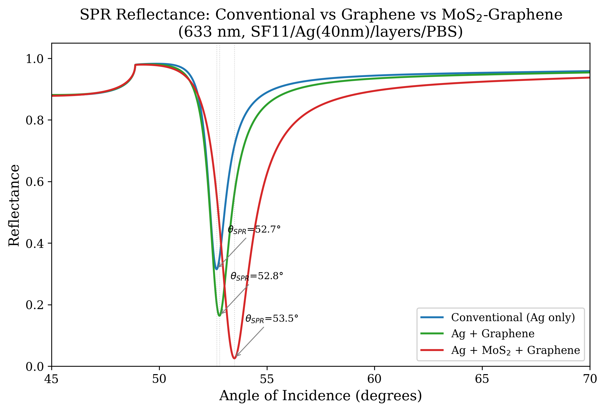
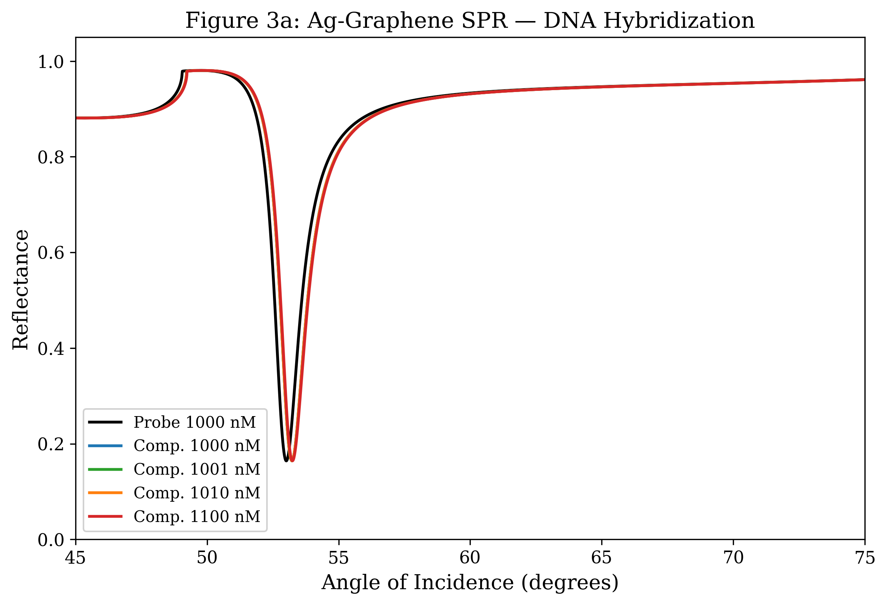
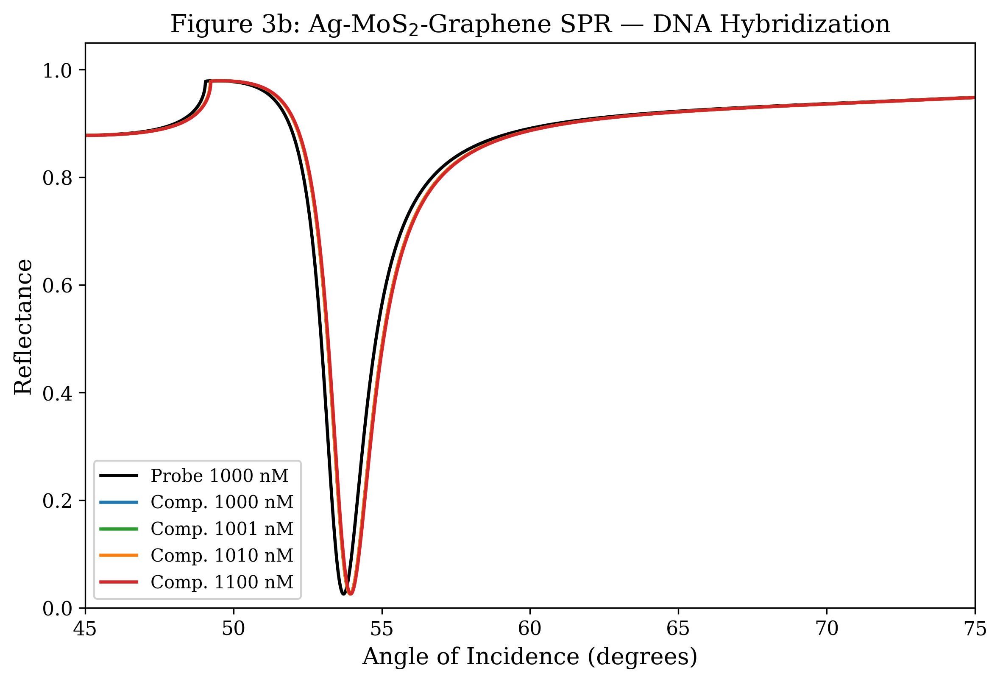
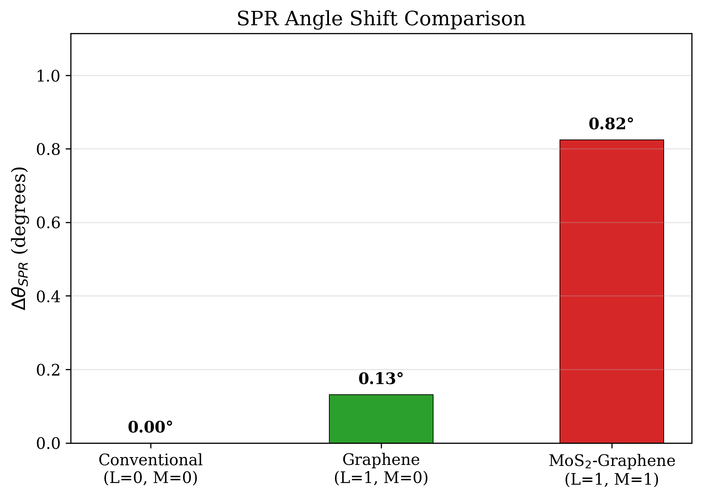
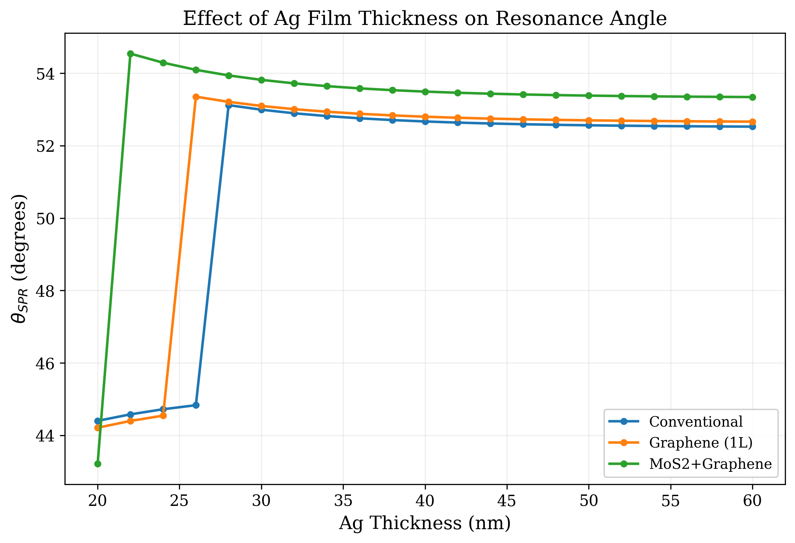
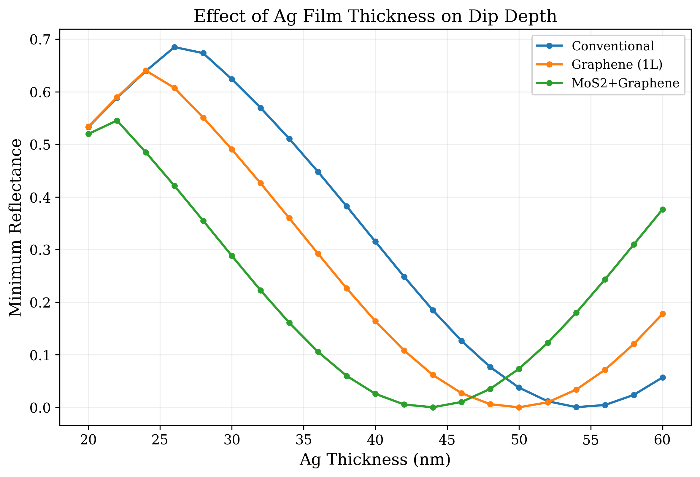
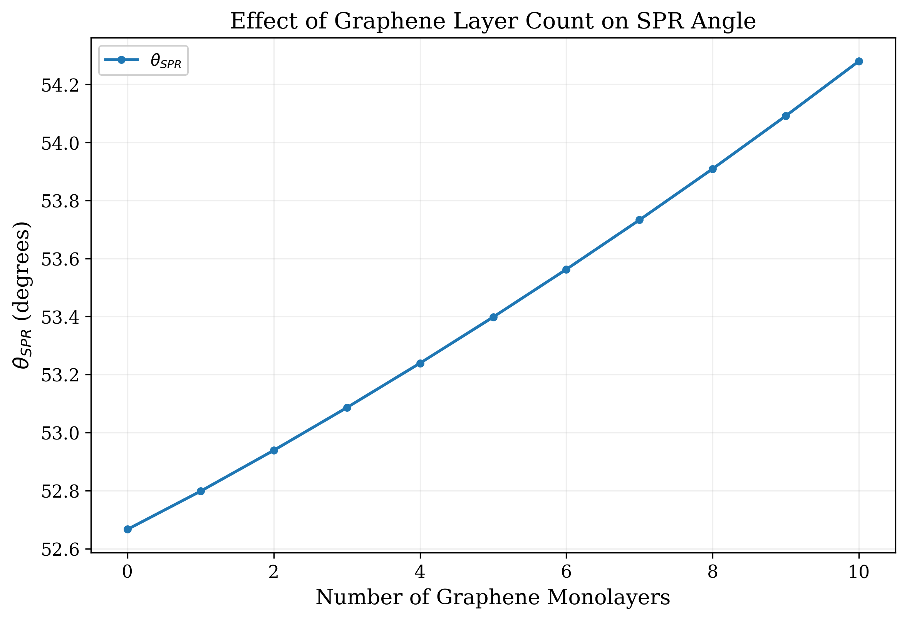
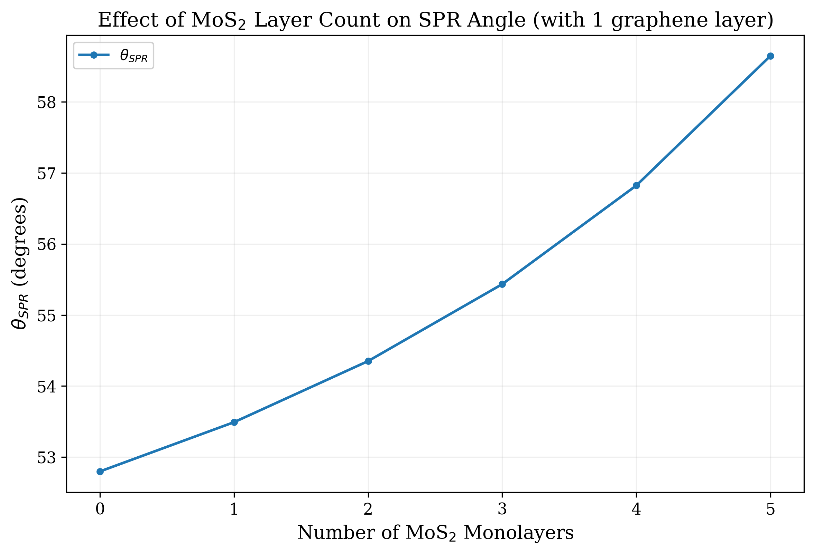
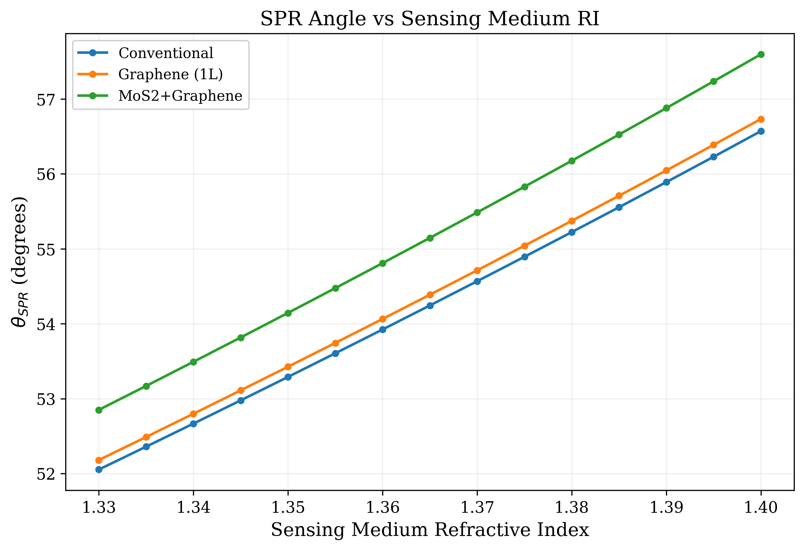

Configurations compared
3 layer stacks
Conventional, graphene-enhanced, MoS2–graphene
An open, reproducible re-implementation of Habib et al. (2019), validated to machine precision against an independent transfer-matrix reference, with a documented discrepancy in the absolute resonance angle.
A multilayer transfer-matrix engine, cross-validated against the Byrnes tmm reference, evaluates three Kretschmann SPR configurations under identical optical constants and reports their resonance angle, minimum reflectance, angular shift, full-width at half-maximum, and bulk refractive-index sensitivity.
This repository reproduces the comparative analysis of Habib, Roy, Islam, Hassan, Islam & Hossain, Study of Graphene–MoS2 Based SPR Biosensor with Graphene Based SPR Biosensor: Comparative Approach, International Journal of Natural Sciences Research 7(1), 1–9 (2019), doi:10.18488/journal.63.2019.71.1.9. The implementation is written from first principles using the Fresnel coefficients for p-polarized light, complex Snell propagation, and the Byrnes interface–propagation matrix product. A test suite of sixty-nine cases verifies physical bounds, qualitative trends, and pointwise agreement with an external reference.
Using the paper’s stated material constants — SF11 prism n = 1.7786, silver ε = −18.295 + 0.481j, PBS buffer n = 1.34 — the SPR resonance occurs near 52–54°, not the 74–77° reported in the paper. The discrepancy of roughly twenty-two degrees is fundamental and cannot be eliminated by varying film thickness or sensing-medium index. Qualitative trends, namely the angular shift introduced by graphene and the further shift introduced by MoS2, are reproduced.
Each stack uses an identical incident prism, an identical silver film, and an identical buffer; the only variable is the bio-recognition overlayer.
A bare silver film deposited on an SF11 prism, in contact with phosphate-buffered saline. This is the reference dip used for all subsequent comparisons.
A single monolayer of graphene is added between the silver film and the buffer. The graphene increases the field overlap with the analyte half-space and shifts the resonance to a slightly higher angle.
A monolayer of MoS2 is inserted between silver and graphene. The stronger optical contrast of MoS2 in the visible range produces a deeper, broader dip and a larger angular shift, at the cost of resonance width.
Resonance metrics from the present implementation, alongside the values originally reported in the paper.
| Configuration | θSPR (°) | Rmin | Δθ (°) | FWHM (°) | S (°/RIU) |
|---|---|---|---|---|---|
| Conventional (Ag only) | 52.67 | 0.315 | 0.00 | 1.11 | 62.0 |
| Ag + Graphene (1L) | 52.80 | 0.164 | 0.13 | 1.26 | 62.5 |
| Ag + MoS2 + Graphene | 53.49 | 0.026 | 0.82 | 1.87 | 65.0 |
| Configuration | θSPR (°) | Rmin | Δθ (°) |
|---|---|---|---|
| Conventional | 74.60 | 0.3484 | 0.00 |
| Graphene | 74.95 | 0.1883 | 0.35 |
| MoS2–Graphene | 76.70 | 0.0293 | 2.10 |
The two tables agree on the direction of every effect. Adding graphene reduces Rmin and shifts the dip outward; adding MoS2 deepens the dip further and widens the resonance. The disagreement is in absolute angle, not in trend. The plausible explanations are a different choice of silver optical constants or a different transfer-matrix sign convention in the original work; neither film thickness nor sensing-medium index can move the dip by more than a few degrees in this regime.
Reflectance curves and DNA-sensing response, generated directly from the simulation.




Each sweep varies a single design variable while holding all others fixed, isolating its contribution to the resonance.





All computations are performed at a single wavelength of 633 nm with p-polarized illumination. The Fresnel and propagation conventions follow Byrnes, arXiv:1603.02720.
The angle-resolved reflectance of an N-layer stack follows from a product of two-by-two interface and propagation matrices applied to the incident field amplitudes.
The resonance angle is located by parabolic refinement around the discrete minimum. The full-width at half-maximum is taken between the two angles where reflectance equals (1+Rmin)/2. Sensitivity is the slope of θSPR against sensing-medium refractive index, evaluated by finite difference around n = 1.34.
Two operating modes are exposed. The reproduction mode applies an empirical scale factor to recover the angular shifts reported in the paper; this factor is documented and has no independent physical derivation. The physics mode maps molar concentration to a mass concentration and to a refractive-index increment using the bulk dn/dc of DNA, producing values much smaller than the paper implies, consistent with the known limitation that bulk dn/dc does not capture surface accumulation.
git clone https://github.com/ruddro-roy/SPR-Biosensor-Comparative-Approach
cd SPR-Biosensor-Comparative-Approach
pip install -e ".[dev,validation]"
pytest tests/ -v # 69 tests
python scripts/reproduce_paper.py # tables + figures in results/
python scripts/extended_analysis.py # parameter sweepsHabib, M. M., Roy, R., Islam, M. M., Hassan, M., Islam, M. M., & Hossain, M. B. (2019). Study of Graphene–MoS2 Based SPR Biosensor with Graphene Based SPR Biosensor: Comparative Approach. International Journal of Natural Sciences Research, 7(1), 1–9.